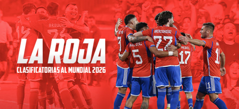
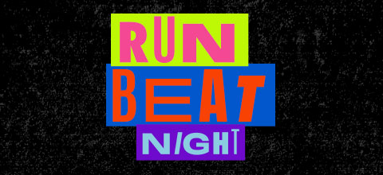
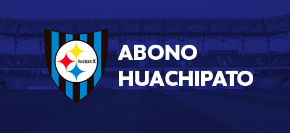
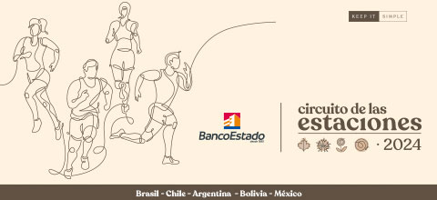

Ticketazo!

Clasificatorias 2026
30 de Diciembre 2024 - 31 de Diciembre 2026
Venta Oficial Clasificatorias 2026. Vive todos los partidos de local de La Roja... ¡En Vivo!
Comprar

Run Beat Night
05 de Octubre 2024
¡Inscríbete en el primer circuito con after run! y prepárate para vivir una aventura llena de música, Djs y un espectáculo
tan energizante que no te lo querrás perder.
Comprar

Huachipato - Abono 2024
31 de Diciembre 2024
ABÓNATE A HUACHIPATO, UNIDOS EN ESTA NUEVA HISTORIA. Desde hoy puedes comprar tu Abono 2024 y ser parte del nuevo camino que
emprende nuestro equipo en el Campeonato Nacional y Copa Chile. Ingresa, revisa los detalles y únete al Campeón del Sur. #VamosHuachipato
Comprar

Circuito de las Estaciones
20 de Octubre 2024
Proveniente desde Brasil, el Circuito de las Estaciones es sinónimo de Carreras de Calles Pedestres. Actualmente es el circuito más grande de América Latina y llega a su 17º
año de historia siendo el principal responsable de despertar al corredor que lleva dentro cada uno. Hay 4 etapas, cada una de las cuales representa una nueva estación del año
y un momento para buscar una nueva meta.
Comprar